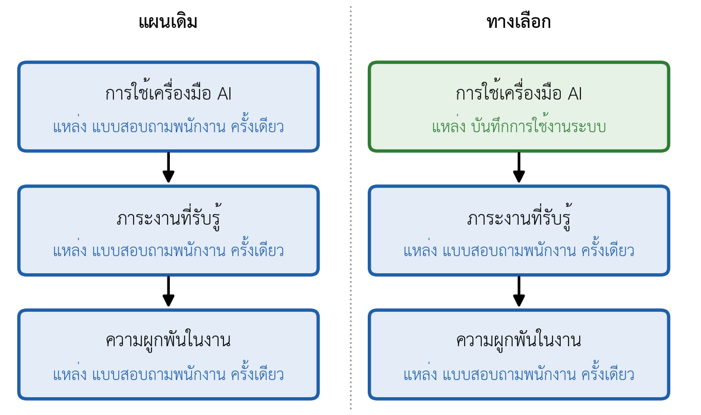
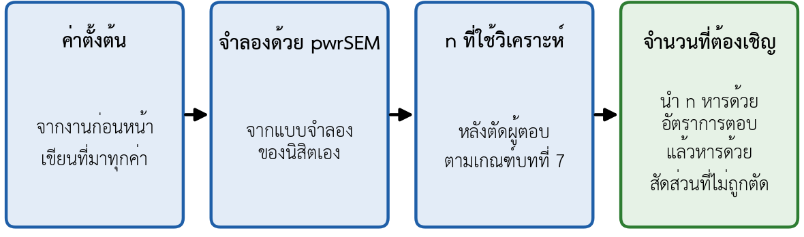

บทที่ 5 ออกแบบแบบสอบถามและกำหนดขนาดตัวอย่าง
เมื่อศึกษาบทนี้จบแล้ว นิสิตสามารถ
- อธิบายความลำเอียงจากวิธีวัดร่วม และเลือกวิธีป้องกันเชิงกระบวนการที่ใช้ได้กับงานของตนได้
- อธิบายด้วยหลักฐานว่าวิธีตรวจคำตอบจากเอเจนต์ AI แบบใดได้ผลและแบบใดไม่ได้ผลได้
- จัดทำรายการตั้งค่าป้องกันคำตอบจากบอทและ AI ของแบบสอบถามตนเองก่อนเปิดเก็บข้อมูลได้
- อธิบายว่าเหตุใดกฎง่ายในการกำหนดขนาดตัวอย่างของ SEM จึงไม่เพียงพอได้
- วิเคราะห์กำลังทดสอบของแบบจำลองตนเอง พร้อมระบุที่มาของค่าพารามิเตอร์ที่ใช้ได้ (ใบงานที่ 5)
ความนำ
บทที่ 4 ได้ข้อคำถามที่ตรวจความเที่ยงตรงเชิงเนื้อหาแล้ว บทนี้นำข้อคำถามเหล่านั้นไปจัดเป็นแบบสอบถาม และตัดสินว่าจะส่งแบบสอบถามให้ใคร กี่คน การตัดสินใจทั้งสองเรื่องต้องทำก่อนเก็บข้อมูล และต้องเขียนลงในข้อ 3 และข้อ 4 ของแผนลงทะเบียนในบทที่ 3
บทนี้มีสามประเด็น ประเด็นแรกคือความลำเอียงที่เกิดจากการวัดตัวแปรหลายตัวด้วยวิธีเดียวกัน ซึ่งป้องกันได้ดีที่สุดในขั้นออกแบบ ประเด็นที่สองเป็นภัยใหม่ที่เกิดขึ้นในช่วงไม่กี่ปีมานี้ คือเอเจนต์ AI ที่ตอบแบบสอบถามออนไลน์แทนคนได้ และผ่านวิธีตรวจแบบเดิมได้เกือบทั้งหมด ประเด็นที่สามคือขนาดตัวอย่าง ซึ่งนิสิตจำนวนมากกำหนดด้วยกฎง่ายที่ส่งต่อกันมา แทนการวิเคราะห์กำลังทดสอบของแบบจำลองตนเอง
ท้ายบทเป็นกรณีศึกษาเดินเรื่องของปริม ซึ่งกำลังจะเปิดแบบสอบถาม บทนี้เน้นนิสิตที่เก็บข้อมูลปฐมภูมิ นิสิตที่ใช้ข้อมูลทุติยภูมิอย่างธามใช้หัวข้อ 5.5 ได้ เพราะคำถามเรื่องกำลังทดสอบใช้กับข้อมูลทุกแบบ
5.1 ความลำเอียงจากวิธีวัดร่วม
ความลำเอียงจากวิธีวัดร่วม (common method bias) คือความสัมพันธ์ที่เกิดจากวิธีวัด ไม่ได้เกิดจากความสัมพันธ์จริงระหว่างแนวคิด ตัวอย่างที่พบบ่อยคือการให้ผู้ตอบคนเดียวกันรายงานทั้งตัวแปรต้นและตัวแปรตามในแบบสอบถามครั้งเดียว ความสัมพันธ์ที่ได้อาจสูงขึ้นเพราะผู้ตอบมีแนวโน้มตอบแบบเดียวกันทั้งชุด
Podsakoff และคณะ (2024) ทบทวนงานด้านนี้และจัดวิธีแก้เป็นสามกลุ่ม ได้แก่ วิธีเชิงกระบวนการ (procedural remedy) ที่ใช้ก่อนเก็บข้อมูล วิธีเชิงสถิติ และเทคนิคตัวแปรเครื่องหมาย (marker variable) และสรุปว่าไม่มีการทดสอบใดแก้ปัญหาได้ครบ ข้อค้นพบที่สำคัญต่อการออกแบบคือ การได้คะแนนจากแหล่งต่างกันลดความสัมพันธ์ที่ลำเอียงได้มากกว่าการเว้นช่วงเวลาระหว่างการวัดตัวแปรต้นกับตัวแปรเกณฑ์ (Podsakoff et al., 2024)
5.1.1 วาดแหล่งของตัวแปร
ผู้เขียนเสนอให้นิสิตวาดแผนภาพเชิงสาเหตุจากบทที่ 2 อีกครั้ง แล้วเขียนกำกับตัวแปรแต่ละตัวว่าได้คะแนนจากแหล่งใด ภาพที่ 5.1 แสดงตัวอย่างของปริม ภาพซ้ายคือแผนเดิม ทุกตัวแปรมาจากแบบสอบถามพนักงานครั้งเดียว ภาพขวาคือทางเลือกที่ตัวแปรต้นมาจากอีกแหล่ง

ที่มา ผู้เขียนวาดจากกรณีศึกษาสมมติ ตามหลักการใน Podsakoff et al. (2024)
ทางเลือกในภาพขวาใช้ได้เมื่อมีแหล่งที่สองจริง เช่น บันทึกการใช้งานระบบที่องค์การเก็บ หรือการประเมินจากหัวหน้า ถ้าไม่มี ทางเลือกรองคือแยกการวัดเป็นสองช่วงเวลา ซึ่งได้ผลน้อยกว่าตามหลักฐานข้างต้น แต่ดีกว่าการวัดครั้งเดียว นิสิตปริญญาเอกควรออกแบบให้มีแหล่งข้อมูลหลายแหล่งหรือหลายช่วงเวลา และเขียนเหตุผลไว้ในแผนลงทะเบียน
5.2 คำตอบจากเอเจนต์ AI ภัยใหม่ของแบบสอบถามออนไลน์
เอเจนต์ AI (AI agent) คือโปรแกรมที่ใช้แบบจำลองภาษาขนาดใหญ่ (large language model หรือ LLM) ควบคุมเว็บเบราว์เซอร์และทำงานต่อเนื่องได้เอง เช่น เปิดลิงก์ อ่านคำถาม และกรอกคำตอบ งานสองเรื่องที่ตีพิมพ์ในปี 2025 แสดงว่าเอเจนต์ประเภทนี้ตอบแบบสอบถามออนไลน์ได้ และผ่านวิธีตรวจที่นักวิจัยใช้กันมาก
5.2.1 หลักฐานจากการทดลองให้เอเจนต์ตอบแบบสอบถาม
Martherus และคณะ (2025, p. 3) ให้เอเจนต์ OpenAI Operator ตอบแบบสอบถาม 100 ครั้ง ระหว่างวันที่ 12 มีนาคม ถึง 9 เมษายน 2025 ผลแบ่งได้เป็นสามกลุ่มตามตารางที่ 5.1
ตารางที่ 5.1 วิธีตรวจคำตอบจากเอเจนต์ AI ที่ได้ผลและไม่ได้ผล
| ผล | วิธีตรวจ | แหล่ง |
|---|---|---|
| ไม่ได้ผล | คำถามตรวจความตั้งใจ (attention check) เอเจนต์ผ่านทุกครั้ง | Martherus et al. (2025, pp. 4–5) |
| ไม่ได้ผล | ถามตรงว่าเป็น AI หรือไม่ เอเจนต์ตอบว่าเป็นมนุษย์ทุกครั้ง | Martherus et al. (2025, pp. 4–5) |
| ไม่ได้ผล | การจดจำภาพ และช่องดักที่ผู้ตอบมองไม่เห็น (honeypot) | Martherus et al. (2025, pp. 4–5) |
| ไม่ได้ผล | reCAPTCHA v3 | Martherus et al. (2025, p. 7 ตาราง 3) |
| ได้ผลบางส่วน | reCAPTCHA v2 | Martherus et al. (2025, p. 7 ตาราง 3) |
| ได้ผลบางส่วน | ตรวจความสอดคล้องของคำตอบ ได้ผลเฉพาะเมื่อไม่ได้กำหนดบุคลิกให้เอเจนต์ | Martherus et al. (2025, p. 5 ตาราง 2) |
| ได้ผล | reverse shibboleth การตรวจการคัดลอกวาง และข้อมูลอุปกรณ์ เช่น IP ของศูนย์ข้อมูลและ user agent ที่ซ้ำกัน | Martherus et al. (2025, pp. 5–7) |
ที่มา ผู้เขียนสรุปจาก Martherus et al. (2025, pp. 4–7)
งานนี้มีข้อจำกัดสำคัญคือไม่มีกลุ่มมนุษย์เปรียบเทียบ (Martherus et al., 2025, pp. 7–8) และทดสอบเอเจนต์เพียงตัวเดียว วิธีที่ได้ผลในตารางจึงยังไม่มีเกณฑ์ตัวเลขที่ใช้ตัดสินได้ทันที และอาจใช้ไม่ได้กับเอเจนต์ตัวอื่น
5.2.2 หลักฐานจากผู้ตอบสังเคราะห์
Westwood (2025, บทคัดย่อ) สร้างผู้ตอบสังเคราะห์ที่ผ่านคำถามตรวจความตั้งใจร้อยละ 99.8 จากการทดสอบ 6,000 ครั้ง และสรุปว่าสมมติฐานพื้นฐานของการสำรวจที่ว่าคำตอบที่สอดคล้องกันคือคำตอบของมนุษย์ใช้ไม่ได้แล้ว ผู้ตอบสังเคราะห์ยังอนุมานสมมติฐานของผู้วิจัยและสร้างข้อมูลที่ยืนยันสมมติฐานนั้นได้ (Westwood, 2025, บทคัดย่อ) แรงจูงใจทางการเงินก็สูง ต้นทุนตอบแบบสอบถามประมาณ 0.05 ดอลลาร์ต่อชุด ขณะที่ค่าตอบแทน 1.50 ดอลลาร์ให้กำไรเกินร้อยละ 96.8 (Westwood, 2025, หัวข้อ 3.1)
สองงานนี้ให้ผลต่างกันในบางเรื่อง เช่น reverse shibboleth ได้ผลในงานแรก แต่ผู้ตอบสังเคราะห์ในงานที่สองหลบได้ ผู้เขียนตีความว่าความต่างนี้มาจากการใช้เครื่องมือต่างกัน บทเรียนสำหรับนิสิตคือห้ามพึ่งวิธีตรวจแบบเดียว และควรให้น้ำหนักกับการควบคุมการรับสมัครมากกว่ากับดักในแบบสอบถาม ซึ่งเป็นเรื่องของหัวข้อ 5.4
5.3 การตั้งค่าก่อนเปิดแบบสอบถาม
การตรวจคำตอบจากบอทหรือ AI ในบทที่ 7 ทำได้เฉพาะเมื่อระบบเก็บข้อมูลที่ต้องใช้ไว้ตั้งแต่แรก ผู้เขียนเสนอรายการตั้งค่าในตารางที่ 5.2 รายการนี้สังเคราะห์จากสองงานในหัวข้อ 5.2 และจากหมวดการป้องกันการตอบซ้ำของ CHERRIES ซึ่งกำหนดให้รายงานวิธีป้องกัน เช่น cookies การตรวจ IP การวิเคราะห์ log file และการลงทะเบียน (Eysenbach, 2004, ตารางรายการตรวจ)
ตารางที่ 5.2 รายการตั้งค่าป้องกันคำตอบจากบอทและ AI ก่อนเปิดแบบสอบถาม (ผู้เขียนเสนอ)
| รายการ | เหตุผล | ใช้ตรวจในบทที่ 7 |
|---|---|---|
| เก็บเวลาเริ่ม เวลาจบ และเวลาต่อหน้า | ตรวจผู้ตอบที่เร็วผิดปกติ | ใช่ |
| เก็บข้อมูลอุปกรณ์เท่าที่ระบบเก็บได้และข้อตกลงด้านข้อมูลส่วนบุคคลยอม | ข้อมูลอุปกรณ์เป็นวิธีที่ได้ผล (Martherus et al., 2025, pp. 5–7) | ใช่ |
| เปิดการตรวจการวางข้อความในช่องปลายเปิดถ้าระบบรองรับ | การตรวจการคัดลอกวางเป็นวิธีที่ได้ผล (Martherus et al., 2025, pp. 5–7) | ใช่ |
| ใช้ลิงก์เฉพาะรายหรือรหัสเชิญ แทนลิงก์เปิด | ลดโอกาสที่ผู้ตอบภายนอกเข้ามา | ใช่ |
| ไม่แสดงรหัสตัวแปรหรือชื่อแนวคิดบนแบบสอบถาม | ลดโอกาสที่ผู้ตอบอนุมานสมมติฐาน (Westwood, 2025, บทคัดย่อ) | ไม่ |
| มีช่องปลายเปิดอย่างน้อยหนึ่งช่อง | ใช้ตรวจข้อความที่คล้ายกันผิดปกติข้ามผู้ตอบ | ใช่ |
| เขียนเกณฑ์ตรวจทุกข้อในแผนลงทะเบียนก่อนเปิด | ป้องกันการตั้งเกณฑ์หลังเห็นข้อมูล (บทที่ 3) | ใช่ |
ที่มา ผู้เขียนสังเคราะห์จาก Martherus et al. (2025) Westwood (2025) และ Eysenbach (2004)
รายการที่สองต้องตรวจกับแผนคุ้มครองข้อมูลส่วนบุคคลในบทที่ 6 ก่อนเปิดใช้ เพราะข้อมูลอุปกรณ์บางอย่างอาจเป็นข้อมูลส่วนบุคคล
5.4 การรับสมัครและกรอบการสุ่ม
Westwood (2025, หัวข้อ 2.3) ประเมินว่าแผงที่รับสมัครแบบเปิด (river sampling) ซึ่งใครก็เข้ามาตอบได้ เสี่ยงต่อผู้ตอบสังเคราะห์มากที่สุด ส่วนการสุ่มจากรายชื่อที่อยู่ หรือการสุ่มหมายเลขโทรศัพท์ (random digit dialing หรือ RDD) น่าจะปลอดภัยกว่า และเสนอว่างานที่ต้องการความมั่นใจสูงควรกลับไปใช้การรับสมัครที่ควบคุมได้ (Westwood, 2025, หัวข้อ 4)
สำหรับวิทยานิพนธ์บริหารธุรกิจ ผู้เขียนเสนอให้นิสิตเขียนกรอบการสุ่ม (sampling frame) ให้ชัดว่ารายชื่อของประชากรมาจากไหน และผู้ตอบเข้าถึงแบบสอบถามทางใด ถ้าเก็บข้อมูลในองค์การ การส่งลิงก์เฉพาะรายถึงพนักงานตามรายชื่อเป็นการรับสมัครที่ควบคุมได้ ส่วนการโพสต์ลิงก์ในกลุ่มสาธารณะเป็นการรับสมัครแบบเปิด ซึ่งทั้งเสี่ยงต่อคำตอบจาก AI และทำให้นิยามประชากรไม่ได้ การได้รายชื่อจากองค์การก็มีประเด็นข้อมูลส่วนบุคคลที่ต้องจัดการในบทที่ 6
การเก็บข้อมูลพนักงานหลายฝ่ายยังมีประเด็นเรื่องระดับตามบทที่ 2 ถ้าตัวแปรต้นกำหนดที่ระดับฝ่าย จำนวนฝ่ายมีผลต่อการวิเคราะห์มากกว่าจำนวนพนักงานรวม การศึกษาด้วยการจำลองของ Maas และ Hox (2005) พบว่าเมื่อจำนวนกลุ่มน้อย คือ 50 กลุ่มหรือน้อยกว่า ค่าความคลาดเคลื่อนมาตรฐานระดับกลุ่มเอนเอียง นิสิตที่วางแผนวิเคราะห์ตัวแปรระดับฝ่ายจึงต้องนับจำนวนฝ่ายที่เข้าถึงได้ตั้งแต่ขั้นออกแบบ
5.5 ขนาดตัวอย่างจากการวิเคราะห์กำลังทดสอบ
นิสิตจำนวนมากกำหนดขนาดตัวอย่างของแบบจำลองสมการโครงสร้าง (structural equation modeling หรือ SEM) ด้วยกฎง่าย (rule of thumb) เช่น จำนวนผู้ตอบต่อพารามิเตอร์หนึ่งตัว Wang และ Rhemtulla (2021, p. 1) ชี้ว่ากฎง่ายเหล่านี้ไม่มีงานวิจัยรองรับ และการวิเคราะห์กำลังทดสอบ (power analysis) ที่ใช้กันใน SEM ส่วนใหญ่มุ่งตรวจการระบุแบบจำลองผิด ซึ่งต่างจากการตรวจผลเป้าหมาย คือเส้นทางที่สมมติฐานของนิสิตสนใจ
5.5.1 อะไรกำหนดกำลังทดสอบ
กำลังทดสอบ (statistical power) คือโอกาสที่การวิเคราะห์จะพบผลเมื่อผลนั้นมีอยู่จริง ใน SEM กำลังทดสอบไม่ได้ขึ้นกับขนาดตัวอย่างอย่างเดียว จำนวนตัวชี้วัดต่อแนวคิดและความเที่ยงของตัวชี้วัดก็มีผลต่อกำลังทดสอบ (Wang & Rhemtulla, 2021, p. 3) ข้อนี้เชื่อมกับบทที่ 4 มาตรวัดที่มีข้อคำถามน้อยหรือความเที่ยงต่ำต้องใช้ผู้ตอบมากขึ้นเพื่อให้ได้กำลังทดสอบเท่าเดิม
5.5.2 เครื่องมือสองแบบ
ตารางที่ 5.3 เปรียบเทียบเครื่องมือสองแบบ แบบแรกใช้การจำลอง (simulation) แบบที่สองใช้สูตรเชิงวิเคราะห์
ตารางที่ 5.3 เครื่องมือวิเคราะห์กำลังทดสอบสำหรับ SEM
| รายการ | pwrSEM | power4SEM |
|---|---|---|
| วิธี | จำลองข้อมูลจากแบบจำลองที่ผู้วิจัยกำหนด | คำนวณเชิงวิเคราะห์ ไม่ต้องจำลอง |
| ใช้ตอบคำถาม | กำลังทดสอบของผลเป้าหมาย เช่น เส้นทางในสมมติฐาน | กำลังของการทดสอบไคสแควร์และ RMSEA |
| รูปแบบ | แอปแบบชี้และคลิก | แอป Shiny |
| แหล่ง | Wang and Rhemtulla (2021, pp. 1, 7) | Jak et al. (2020, p. 1385) |
สำหรับวิทยานิพนธ์ที่สมมติฐานอยู่ที่เส้นทางในแบบจำลอง ผู้เขียนเสนอให้ใช้ pwrSEM เป็นหลัก เพราะตอบคำถามว่าตัวอย่างพอสำหรับทดสอบสมมติฐานหรือไม่ โดยตรง
5.5.3 ค่าตั้งต้นต้องมีที่มา
การจำลองต้องใช้ค่าพารามิเตอร์ตั้งต้น เช่น ขนาดของเส้นทางหลักและน้ำหนักองค์ประกอบ ผู้เขียนเสนอให้นิสิตนำค่าจากงานก่อนหน้าที่อ้างได้ และเขียนที่มาของทุกค่า ถ้าไม่มีงานก่อนหน้า ให้ใช้ค่าที่เล็กที่สุดที่ยังมีความหมายในทางปฏิบัติ และเขียนเหตุผล Wang และ Rhemtulla (2021, p. 7) เตือนว่าผลการจำลองในบทความของตนไม่ควรนำไปใช้เป็นกฎง่ายใหม่ ผู้วิจัยต้องจำลองจากแบบจำลองของตนเอง
ขนาดตัวอย่างที่ได้จากการวิเคราะห์คือจำนวนผู้ตอบที่ใช้วิเคราะห์ได้ หลังตัดผู้ตอบตามเกณฑ์ในบทที่ 7 แล้ว ดังนั้นจำนวนที่ต้องเชิญต้องมากกว่านี้ และนิสิตต้องเขียนสมมติฐานเรื่องอัตราการตอบและอัตราที่จะถูกตัดไว้ในแผนด้วย
ภาพที่ 5.2 สรุปลำดับจากค่าตั้งต้นไปถึงจำนวนผู้ตอบที่ต้องเชิญ

ที่มา ผู้เขียนเสนอ ตามหลักการใน Wang และ Rhemtulla (2021) การคำนวณในกรอบสีเขียวเป็นการประมาณอย่างง่าย อัตราการตอบและอัตราที่ถูกตัดใช้ค่าที่นิสิตเขียนไว้ในแผน
5.6 ข้อผิดพลาดที่พบบ่อย
ตารางที่ 5.4 ข้อผิดพลาดที่พบบ่อยและวิธีแก้
| ข้อผิดพลาด | ตัวอย่าง | วิธีแก้ |
|---|---|---|
| วัดตัวแปรต้นและตัวแปรตามจากผู้ตอบคนเดียวกันครั้งเดียวโดยไม่มีเหตุผล | ทุกตัวแปรอยู่ในแบบสอบถามพนักงานชุดเดียว | หาแหล่งที่สองหรือแยกช่วงเวลา (Podsakoff et al., 2024) |
| เชื่อว่าคำถามตรวจความตั้งใจกันบอทได้ | ตัดเฉพาะผู้ตอบที่ตอบคำถามตรวจผิด | ใช้หลายวิธีตามตารางที่ 5.2 (Martherus et al., 2025, pp. 4–5; Westwood, 2025, บทคัดย่อ) |
| ไม่ได้ตั้งระบบเก็บเมทาดาตา | ไม่มีเวลาตอบหรือข้อมูลอุปกรณ์ให้ตรวจ | ตั้งค่าก่อนเปิดตามตารางที่ 5.2 |
| ใช้ลิงก์เปิดในกลุ่มสาธารณะ | โพสต์ลิงก์ในกลุ่มบนสื่อสังคม | ใช้การรับสมัครที่ควบคุมได้ (Westwood, 2025, หัวข้อ 2.3) |
| กำหนดขนาดตัวอย่างด้วยกฎง่าย | 10 คนต่อพารามิเตอร์ | วิเคราะห์กำลังทดสอบของแบบจำลองตนเอง (Wang & Rhemtulla, 2021, p. 1) |
| ใช้ค่าตั้งต้นการจำลองโดยไม่บอกที่มา | ใส่ขนาดผลที่ทำให้ได้ตัวอย่างน้อย | อ้างงานก่อนหน้าทุกค่า (Wang & Rhemtulla, 2021, p. 7) |
| ไม่เผื่อผู้ตอบที่จะถูกตัด | เชิญเท่ากับขนาดตัวอย่างที่คำนวณได้พอดี | เขียนอัตราการตอบและอัตราที่จะถูกตัดไว้ในแผน (ผู้เขียนเสนอ) |
ปริมวางแผนส่งลิงก์แบบสอบถามเปิดในกลุ่มสาธารณะของพนักงานบริษัทบนสื่อสังคม เพื่อให้ได้ผู้ตอบเร็ว และวัดทั้งการใช้เครื่องมือ AI และความผูกพันในงานจากพนักงานคนเดียวกันในแบบสอบถามครั้งเดียว ปริมกำหนดขนาดตัวอย่าง 300 คน ด้วยกฎ 10 คนต่อพารามิเตอร์หนึ่งตัว ตามที่รุ่นพี่แนะนำ
ฝ่ายบุคคลของบริษัทเสนอส่งรายชื่ออีเมลพนักงานทั้ง 12 ฝ่ายให้ปริม
คำถามชวนคิด แผนของปริมมีความเสี่ยงอะไรบ้างตามหัวข้อ 5.1 5.2 และ 5.4 ข้อเสนอของฝ่ายบุคคลช่วยแก้ความเสี่ยงข้อใด และสร้างประเด็นใหม่อะไรที่ต้องจัดการในบทที่ 6 ส่วนตัวเลข 300 คน ปริมควรได้มาด้วยวิธีใดแทน
เมื่อศึกษาบทนี้แล้ว นิสิตสามารถอธิบายความลำเอียงจากวิธีวัดร่วม และรู้ว่าการได้คะแนนจากแหล่งต่างกันป้องกันได้ดีกว่าการเว้นช่วงเวลา และไม่มีการทดสอบทางสถิติใดแก้ปัญหาได้ครบ นิสิตจึงออกแบบแหล่งของตัวแปรตั้งแต่ขั้นนี้ ไม่รอแก้ในขั้นวิเคราะห์
นิสิตสามารถอธิบายด้วยหลักฐานว่าเอเจนต์ AI ผ่านคำถามตรวจความตั้งใจได้เกือบทุกครั้ง วิธีที่ได้ผลกว่าคือการตรวจข้อมูลอุปกรณ์ การตรวจการคัดลอกวาง และการควบคุมการรับสมัคร นิสิตจัดทำรายการตั้งค่าก่อนเปิดแบบสอบถาม และเขียนกรอบการสุ่มที่บอกได้ว่าผู้ตอบมาจากไหน นิสิตยังสามารถอธิบายว่ากฎง่ายในการกำหนดขนาดตัวอย่างของ SEM ไม่มีงานวิจัยรองรับ และวิเคราะห์กำลังทดสอบของแบบจำลองตนเองด้วยค่าตั้งต้นที่มีที่มา
ผลของใบงานที่ 5 คือแบบสอบถามฉบับร่าง รายการตั้งค่า และผลวิเคราะห์กำลังทดสอบ ก่อนนำแบบสอบถามไปทดลองใช้ในบทที่ 7 นิสิตต้องผ่านขั้นจริยธรรมการวิจัยและการคุ้มครองข้อมูลส่วนบุคคล ซึ่งเป็นเรื่องของบทที่ 6
- ความลำเอียงจากวิธีวัดร่วม (common method bias)
- วิธีเชิงกระบวนการ (procedural remedy)
- ตัวแปรเครื่องหมาย (marker variable)
- เอเจนต์ AI (AI agent)
- คำถามตรวจความตั้งใจ (attention check)
- ช่องดัก (honeypot)
- reverse shibboleth
- การรับสมัครแบบเปิด (river sampling)
- กรอบการสุ่ม (sampling frame)
- กฎง่าย (rule of thumb)
- กำลังทดสอบ (statistical power)
- การวิเคราะห์กำลังทดสอบ (power analysis)
คำถามทบทวน
- จงอธิบายความลำเอียงจากวิธีวัดร่วม และเหตุใดการได้คะแนนจากแหล่งต่างกันจึงเป็นวิธีป้องกันที่ดีกว่าการเว้นช่วงเวลา พร้อมเสนอแหล่งที่สองที่เป็นไปได้สำหรับตัวแปรหนึ่งในงานของตน
- นิสิตคนหนึ่งกล่าวว่า "แบบสอบถามของผมมีคำถามตรวจความตั้งใจสามข้อ จึงไม่ต้องกังวลเรื่องบอท" จงประเมินข้อความนี้ด้วยหลักฐานในหัวข้อ 5.2
- เหตุใด Westwood (2025) จึงเสนอให้ให้น้ำหนักกับการรับสมัครมากกว่ากับดักในแบบสอบถาม และข้อเสนอนี้ใช้กับการเก็บข้อมูลในองค์การของนิสิตได้อย่างไร
- จงอธิบายว่ากำลังทดสอบเพื่อตรวจการระบุแบบจำลองผิด ต่างจากกำลังทดสอบเพื่อตรวจผลเป้าหมายอย่างไร และวิทยานิพนธ์ของนิสิตต้องการแบบใด
- ถ้าการวิเคราะห์กำลังทดสอบบอกว่าต้องการผู้ตอบ 250 คน นิสิตควรเชิญผู้ตอบกี่คน จงอธิบายสิ่งที่ต้องคิดเพิ่มโดยไม่ต้องคำนวณตัวเลข
ใบงานที่ 5 แบบสอบถามฉบับร่างและแผนขนาดตัวอย่าง
ให้นิสิตที่เก็บข้อมูลปฐมภูมิจัดทำเอกสารสำหรับโครงการวิจัยของตนเอง นิสิตที่ใช้ข้อมูลทุติยภูมิทำเฉพาะข้อ 4 และข้อ 6
- แบบสอบถามฉบับร่าง ระบุลำดับข้อ ข้อกลับทิศ และช่องปลายเปิด
- ภาพแหล่งของตัวแปรแบบภาพที่ 5.1 และเหตุผลถ้าตัวแปรต้นกับตัวแปรตามมาจากแหล่งเดียวกัน
- รายการตั้งค่าตามตารางที่ 5.2 ระบุว่าเปิดใช้รายการใด และรายการใดระบบไม่รองรับ
- ผลวิเคราะห์กำลังทดสอบของเส้นทางหลัก พร้อมค่าตั้งต้นทุกค่าและแหล่ง (นิสิตปริญญาเอกทำทุกสมมติฐาน)
- กรอบการสุ่ม วิธีรับสมัคร อัตราการตอบที่คาด และจำนวนที่จะเชิญ
- ปรับข้อ 3 และข้อ 4 ของแผนลงทะเบียนให้ตรงกับใบงานนี้ และบันทึกในบันทึกการแก้แผน
เอกสารอ้างอิง
วราวุฒิ นาคบุญนำ. (2569). บทที่ 5 ออกแบบแบบสอบถามและกำหนดขนาดตัวอย่าง. ใน เริ่มต้นทำวิจัย จากคำถามถึงชุดข้อมูลที่วิเคราะห์ได้. คณะการบัญชีและการจัดการ มหาวิทยาลัยมหาสารคาม. https://aj-warawut.github.io/academic-web-teaching/rs_lesson_05.html